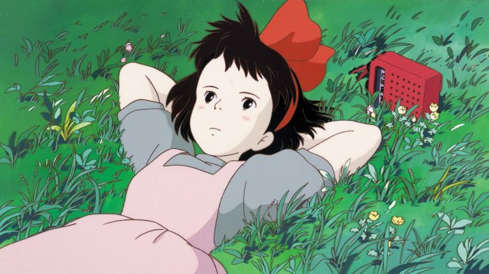
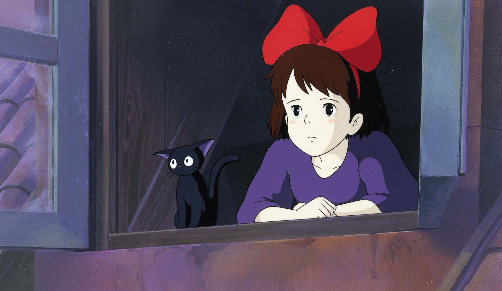
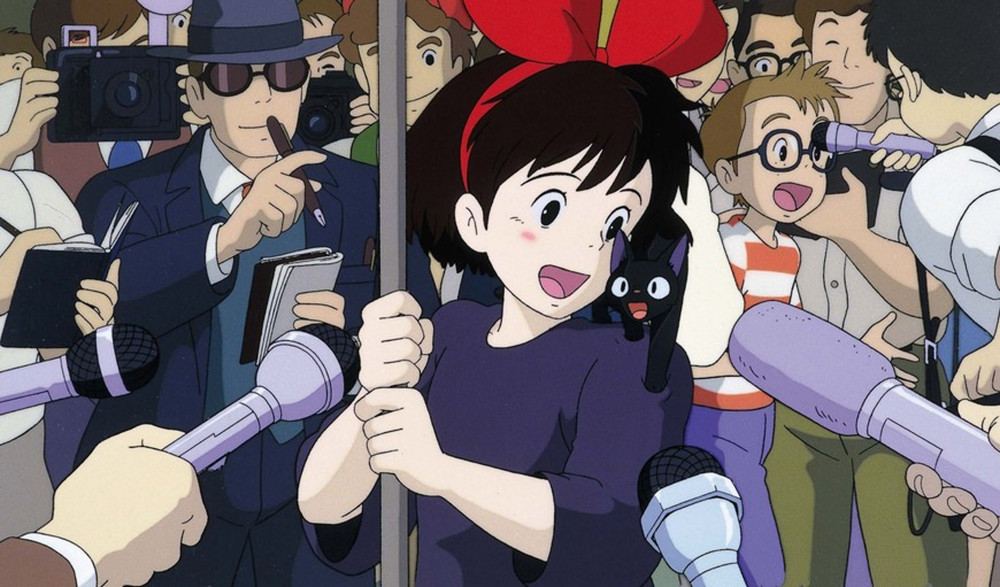

第一次離家
《出發點：1979-1996》：獲得獨立的自由，也意味著要獨自承受不安與孤獨。

琪琪（Kiki）是一個繼承魔女血統的少女，根據傳統，魔女們滿13歲那一年必須要離開家到一個陌生城市中靠著自己的力量生活一年，
原本琪琪滿懷期待出發，路途中遇到了魔女前輩，卻開始擔心自己只會飛行，沒有其他專長，不像其他人胸有成竹的模樣。
在一場大雨後，琪琪陰錯陽差來到克里克城市—夢想中的落腳之處，但緊接著發現現實不如想像般美好，都市裡的人們特別冷漠、
被小混混搭訕、還被其他人質疑自己年紀太小，甚至穿著都被挑剔。
琪琪在新環境裡，感到特別地孤單。
但不想那麼快放棄的琪琪，漸漸發現其實現實並沒有自己想像得糟，因為自己的熱心幫忙下，得以在麵包店老闆娘的家入住，
並建立了飛行宅配的服務。
第一次挫折
琪琪："我現在才剛開始我的修行而已，要是沒有魔法的話，那我就是一點用處都沒有的人了！"

琪琪對工作的堅持與熱情在過程中被消磨與糟蹋，在大雨中淋濕了全身、沒能趕上被邀請出席的派對，甚至生病發燒，
心情低落之下想到自己身處異鄉，沒有了家人平時的照料與關心，每天得要辛苦工作賺錢維持生活，
自己與其他人截然不同的境遇感到難過不已。
後來竟然還發現魔法變弱、聽不懂黑貓吉吉說的話、再也無法騎著掃帚順利飛翔，琪琪擔心要是沒有魔法的話，
毫無其他專長的她，就是一點用處也都沒有的人了。
第一次深刻連結
琪琪："雖然也有難過的時候，可是，我真的好喜歡這個城市喔！"

讓琪琪重新找回力量的，是在一路上結識的夥伴們：麵包店老闆娘給予適時的關心與陪伴；
獨自住在森林裡作畫的烏蘇拉姊姊，告訴她自己也有過畫不出來、原地踏步的時刻；
行動不便的老婦人讓琪琪感受到待人良善所付出的溫暖回報。
而原本看似小混混但其實是個陽光暖男的蜻蜓，嚮往飛行的他，也親身示範給琪琪看對於夢想的堅持不懈，
這也讓琪琪更加珍惜自己與生俱來的能力。
後來在一次的意外中，蜻蜓受困在飛行船上，為了好朋友，琪琪在情急之下借了一把刷子，
靠著自己重新馴服的力量再度飛上天空，在市民的加油聲之下成功救援。
這一刻琪琪感受到自己與城市之間，齊力同心的深刻連結，而原本城市中大多數冷漠的市民，
也對於這位新到來的魔女琪琪有更良好的互動交流。